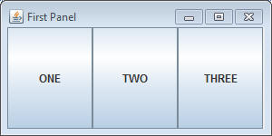
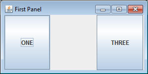
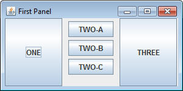
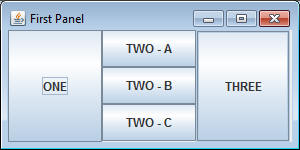
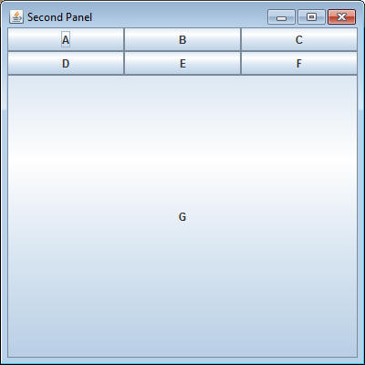
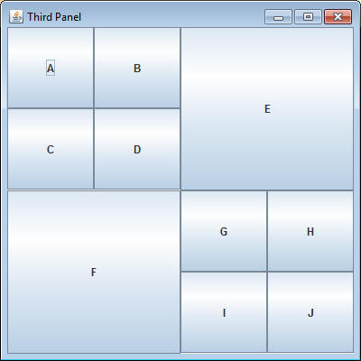

So far we've looked at three different layouts: FlowLayout, GridLayout, and BorderLayout. While that gives a little bit of variety in the way that things are organized in our window, we can go further using SPanels. An SPanel fits into an SFrame just like an SButton, but an SPanel can have it's very own layout and hold multiple elements just like an SFrame.
Create a class named PanelPrograms and add the following method:
public static void firstPanel()
{
SFrame frame = new SFrame("First Panel");
frame.setLayout(new GridLayout(1,3));
frame.add(new SButton("ONE"));
frame.add(new SButton("TWO"));
frame.add(new SButton("THREE"));
frame.setSize(300,150);
frame.setVisible(true);
}
If you compile and run the code, you should end up with the following.

Here we have a standard GridLayout, which splits the frame up into three equal parts. Let's modify it a little bit.
Find the line that says "frame.add(new SButton("TWO"));" and delete it. Instead of adding a single button here, we're going to add several buttons to an SPanel which goes there.
Add the following lines at that location. These construct a new SPanel and add it where the "TWO" button used to be:
SPanel pan = new SPanel(); //more code will go here frame.add(pan);
If you run it now you should get the following:

There is a blank spot where the "TWO" button used to be. There is now a panel there. The panel on its own is not much to look at because its true purpose is to be a container for other objects.
Now it's time to add things to the panel. Go back to the code in the location after you've created a panel but before you've added it to the frame. Insert the following lines of code:
pan.add(new SButton("TWO - A"));
pan.add(new SButton("TWO - B"));
pan.add(new SButton("TWO - C"));
Notice that we can add things to an SPanel just like we can add them to an SFrame. Run the code and make sure you get the following:

All three buttons are now in that central area where the "TWO" button used to be. Drag and resize the window and you'll notice that an SPanel has a FlowLayout by default. Just like an SFrame, an SPanel can have its own Layout that's different than the frame's.
Add the following line of code in the same location:
GridLayout grid = new GridLayout(3,1); pan.setLayout(grid);
This line tells the SPanel to organize the buttons into a 3x1 grid. At the moment the FlowLayout is making them look like they're in a grid, but unlike the FlowLayout, the GridLayout will resize the elements to be exactly the right size.

An SPanel combines the abilities to hold items like an SFrame, but can be added to another SFrame and act as a single element.
Add the following methods to your PanelPrograms class, and use SPanels to replicate the given GUI
public static void secondPanel()
One panel, Seven Buttons, One GridLayout, One BorderLayout

public static void thirdPanel()
Two SPanels, Ten SButtons, and Three GridLayouts

public static void fourthPanel()
Five SButtons, One Panel, One BorderLayout, One GridLayout